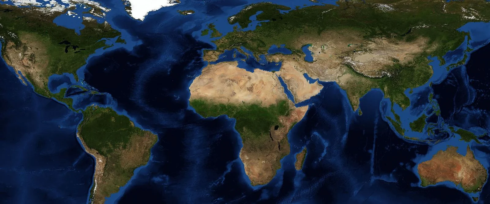

Samuel P. Huntington · 1996 · traduction française, Odile Jacob, 1997
L'essai du politiste américain Samuel Huntington selon lequel, après la guerre froide, les grands conflits ne seront plus idéologiques mais culturels, entre des civilisations définies d'abord par la religion. Le livre le plus discuté de l'après-guerre froide, relu après le 11 septembre 2001 et revenu en force dans les discours des grandes puissances depuis 2022.
Après 1991, les peuples ne se demandent plus « de quel camp sommes-nous ? » mais « qui sommes-nous ? ». Ils répondent par la religion, la langue et l'histoire : le monde se divise en huit ou neuf civilisations.
2
Des lignes de fracture
Les conflits les plus dangereux naissent aux frontières entre civilisations, des Balkans au Cachemire. À l'échelle mondiale, l'Occident déclinant fait face au « reste du monde », l'islam et la Chine en tête.
3
Contestée, mais revenue
Jugée simpliste et démentie par la plupart des guerres, qui opposent des voisins de même culture, la thèse inspire pourtant les doctrines d'« États-civilisations » de Moscou, Pékin et Washington entre 2023 et 2025.
02
La carte commentée
Cliquez sur un numéro ou une lettre pour lire le repère.

Image : NASA Blue Marble
Le monde selon Huntington
Les chiffres désignent les neuf civilisations de sa carte de 1996, les lettres les lignes de fracture qu'il juge les plus dangereuses. En jaune, la frontière orientale du christianisme occidental.
Neuf civilisations
Lignes de fracture
Carte simplifiée d'après celle du livre (« Le monde des civilisations après 1990 ») : les aires et les lignes sont celles de Huntington, pas des frontières réelles.
03
Comprendre
Cinq temps pour lire le livre, le situer et le discuter.
IUn livre né d'un article
À l'été 1993, Samuel Huntington, professeur à Harvard, publie dans la revue Foreign Affairs un article au titre interrogatif : « The Clash of Civilizations? ». Le point d'interrogation disparaît dans le livre de 1996, traduit en français l'année suivante. L'expression elle-même n'est pas de lui : l'historien Bernard Lewis parlait déjà, en septembre 1990, d'un « choc des civilisations » entre l'islam et l'Occident.
Le texte répond à une question qui obsède l'Amérique après la chute de l'URSS : quel ordre mondial succède à la guerre froide ? Pour Francis Fukuyama, ancien élève de Huntington, la démocratie libérale a gagné et l'humanité atteint la « fin de l'histoire ». Pour John Mearsheimer, le monde revient à l'instabilité des rivalités de puissances. Huntington propose une troisième voie : les conflits continueront, mais ils changeront de nature.
« Les lignes de fracture entre civilisations seront les lignes de front de l'avenir. »
Samuel Huntington, « The Clash of Civilizations? », Foreign Affairs, 1993 (notre traduction)
IILe monde selon Huntington
Une civilisation est, pour lui, le plus large niveau d'identité culturelle, celui qui n'est dépassé que par l'appartenance à l'humanité. Elle se définit par la langue, l'histoire, les coutumes et surtout la religion. Il en compte huit ou neuf : occidentale, latino-américaine, africaine, islamique, orthodoxe, hindoue, chinoise (qu'il appelle « sinique »), japonaise et bouddhiste. Dans le monde de l'après-guerre froide, la religion revient en force : c'est la « revanche de Dieu ».
Chaque civilisation s'organise autour d'un État phare : les États-Unis (avec l'Europe) pour l'Occident, la Russie, la Chine, l'Inde, le Japon. Certains pays sont déchirés, leurs élites voulant rejoindre une autre civilisation que celle de leur peuple : la Turquie depuis Atatürk, le Mexique, la Russie depuis Pierre le Grand. D'autres sont clivés, coupés en deux par une frontière de civilisation, comme l'Ukraine ou le Soudan.
Surtout, Huntington refuse l'idée que la modernisation conduirait à l'occidentalisation. Les autres sociétés adoptent la technique de l'Occident, pas ses valeurs. Il le rappelle sans fard :
« L'Occident a conquis le monde non par la supériorité de ses idées, de ses valeurs ou de sa religion, mais par sa supériorité dans l'usage de la violence organisée. Les Occidentaux l'oublient souvent ; les non-Occidentaux, jamais. »
Samuel Huntington, The Clash of Civilizations and the Remaking of World Order, 1996 (notre traduction)
IIILignes de fracture et « Occident contre le reste »
Le choc se joue à deux échelles. À l'échelle locale, ce sont les guerres de lignes de fracture, entre voisins de civilisations différentes : la Bosnie, la Tchétchénie, le Cachemire. Elles s'étendent par le « syndrome du pays frère » : chaque camp reçoit l'aide de sa civilisation. En 1993, Huntington écrit que « l'islam a des frontières sanglantes », la phrase la plus critiquée de son texte, qu'il défend ensuite à l'aide de statistiques sur les conflits et sur la jeunesse des sociétés musulmanes.
À l'échelle mondiale, l'Occident, dont le poids démographique et économique recule, fait face au « reste du monde ». Les deux défis majeurs sont l'islam, porté par sa démographie, et la Chine, portée par sa croissance, que pourrait unir une « connexion confucéo-islamique ». Car l'universalisme occidental est perçu ailleurs comme un impérialisme.
Un prophète de guerre ?
On l'oublie souvent : Huntington redoute le choc plus qu'il ne le souhaite. Il conseille à l'Occident de resserrer l'alliance entre l'Europe et l'Amérique du Nord, de ne pas imposer ses valeurs et de ne pas intervenir dans les conflits internes aux autres civilisations (la « règle d'abstention »). En 2004, dans Who Are We?, il retourne l'analyse vers son pays et s'inquiète de l'immigration hispanique, qui menacerait selon lui l'identité anglo-protestante des États-Unis.
IVUne thèse très critiquée
Dès 1993, Fouad Ajami répond dans Foreign Affairs que les États suivent leurs intérêts, pas leur civilisation. Après le 11 septembre 2001, qui fait du livre un best-seller, Edward Said dénonce un « choc de l'ignorance » : les civilisations ne sont pas des blocs fermés, elles se mêlent et se disputent de l'intérieur. Huntington serait coupable d'essentialisme.
L'économiste Amartya Sen rappelle en 2006, dans Identité et violence, que chacun a des identités multiples (nationalité, langue, métier, convictions) : réduire un individu à sa civilisation est une « illusion » qui nourrit la violence. Le démographe Youssef Courbage et l'historien Emmanuel Todd montrent en 2007 que la baisse de la fécondité et l'alphabétisation rapprochent le monde musulman des autres sociétés : c'est un « rendez-vous » plus qu'un choc.
Les faits ne lui donnent pas toujours raison. Les guerres les plus meurtrières opposent souvent des voisins de même culture : Iran contre Irak (1980-1988), génocide des Tutsi au Rwanda en 1994, guerres civiles de Syrie ou du Soudan. Les djihadistes d'Al-Qaida ou de l'organisation État islamique parlent bien le langage du choc, mais la plupart de leurs victimes sont musulmanes. En somme, la thèse décrit moins le monde qu'elle ne risque de le fabriquer : c'est le danger d'une prophétie autoréalisatrice.
La réponse des Nations unies
Sur proposition du président iranien Mohammad Khatami, l'ONU fait de 2001 l'Année du dialogue entre les civilisations. En 2005, l'Espagne et la Turquie lancent sous son égide l'Alliance des civilisations, réponse directe à l'idée de choc.
V2026 : le retour des civilisations
Trente ans après, le vocabulaire de Huntington est entré dans les doctrines officielles. Le concept de politique étrangère russe du 31 mars 2023 définit la Russie comme un « État-civilisation » original, au cœur du « monde russe ». Deux semaines plus tôt, Xi Jinping lançait une Initiative pour la civilisation mondiale. En décembre 2025, la Stratégie de sécurité nationale des États-Unis s'alarme d'un « effacement civilisationnel » de l'Europe, lié selon elle à l'immigration et au recul de la natalité.
Les conflits récents donnent pourtant une image contrastée. Certains suivent ses lignes de fracture : Inde contre Pakistan au Cachemire en mai 2025, Israël contre l'Iran en juin 2025, Arménie contre Azerbaïdjan. Mais la guerre la plus meurtrière du monde, celle que la Russie mène en Ukraine depuis 2022, oppose deux peuples slaves et majoritairement orthodoxes. Le blocage du détroit d'Ormuz en 2026 relève de la puissance et des ressources plus que de la culture.
Selon l'UCDP, le monde a connu en 2025 huit conflits entre États, un record depuis 1946, mais 57 des 65 conflits impliquant un État restent des guerres civiles. La grille de Huntington éclaire donc certains conflits et en manque beaucoup d'autres. Elle reste surtout une représentation puissante, que les dirigeants mobilisent pour justifier leurs choix.
04
Les chiffres
Les données clés, datées et sourcées.
8conflits entre États en 2025, un record depuis 1946 (2 en 2023)UCDP, juin 2026
57 sur 65conflits impliquant un État en 2025 sont des guerres civiles, souvent au sein d'une même cultureUCDP, juin 2026
25,6 %de la population mondiale est musulmane en 2020 (23,8 % en 2010), contre 28,8 % chrétiennePew Research Center, juin 2025
94 700morts au moins en 2025 dans la guerre entre la Russie et l'Ukraine, 62 % des morts au combat du mondeUCDP, juin 2026
Les grandes religions du monde
Part de la population mondiale en 2020, en %
Source : Pew Research Center, How the Global Religious Landscape Changed From 2010 to 2020, juin 2025. La religion est, pour Huntington, le cœur des civilisations.
Des guerres surtout internes
Les 65 conflits impliquant au moins un État en 2025
Source : UCDP, université d'Uppsala, juin 2026. Les conflits entre États ont quadruplé depuis 2023 (2 en 2023, 4 en 2024, 8 en 2025), mais les guerres civiles restent la règle.
05
Pour et contre Huntington
Qui l'inspire, qui le conteste, qui s'en réclame.
1990Bernard Lewis
Ce qu'il dit
Dans « The Roots of Muslim Rage » (The Atlantic), il voit dans la colère d'une partie du monde musulman un « choc des civilisations » avec l'Occident.
Son apport
La formule, et l'idée d'une rivalité de longue durée entre islam et Occident.
1993Fouad Ajami
Ce qu'il objecte
Dans « The Summoning » (Foreign Affairs), il soutient que les États, et non les civilisations, restent les acteurs décisifs.
Son apport
Le rappel réaliste : un État s'allie à qui sert ses intérêts, même hors de sa civilisation.
2001Edward Said
Ce qu'il objecte
Dans « The Clash of Ignorance » (The Nation), il refuse de faire de « l'islam » et de « l'Occident » des blocs homogènes.
Son apport
La critique de l'essentialisme, dans le prolongement de L'Orientalisme (1978).
2006Amartya Sen
Ce qu'il objecte
Dans Identité et violence, il montre que chacun a des identités plurielles, qu'aucune civilisation ne résume.
Son apport
Assigner une identité unique, c'est préparer la violence qu'on prétend décrire.
2007Courbage et Todd
Ce qu'ils objectent
Dans Le Rendez-vous des civilisations, ils montrent que la fécondité baisse partout, y compris dans le monde musulman.
Leur apport
Une convergence démographique et culturelle plutôt qu'un choc.
2023Les « États-civilisations »
Ce qu'ils reprennent
La Russie (2023), la Chine (2023) et la stratégie américaine de 2025 parlent le langage des civilisations.
La limite
Un vocabulaire mobilisé pour justifier des politiques de puissance plus qu'une description du monde.
06
Dans une copie
Comment mobiliser l'ouvrage en dissertation.
Une accroche
En décembre 2025, la Stratégie de sécurité nationale des États-Unis s'inquiète d'un « effacement civilisationnel » de l'Europe. Deux ans plus tôt, la Russie se proclamait « État-civilisation » et la Chine lançait une Initiative pour la civilisation mondiale.
Trente ans après Huntington, les civilisations sont entrées dans les doctrines des grandes puissances : décrivent-elles le monde, ou servent-elles à le diviser ?
L'idée-force
Huntington a raison de rappeler que les identités culturelles et religieuses pèsent dans les conflits de l'après-guerre froide. Il a tort d'en faire des blocs homogènes et le moteur principal des guerres, qui restent surtout internes et guidées par les intérêts.
Nuance utile : sa thèse vaut moins comme prévision que comme représentation, une grille que les acteurs reprennent pour se définir et désigner leurs adversaires.
Des sujets où le placer
Le monde de l'après-guerre froide : fin de l'histoire ou choc des civilisations ?
Les religions sont-elles des facteurs de conflits ?
Les conflits du XXIe siècle sont-ils identitaires ?
L'Occident face au reste du monde ?
Le 11 septembre 2001, un tournant géopolitique ?
La Russie, une puissance européenne ?
Le Moyen-Orient, une zone de fractures ?
Références à citer
Samuel Huntington, « The Clash of Civilizations? », Foreign Affairs (1993), puis Le Choc des civilisations (1996, trad. 1997).
Francis Fukuyama, La Fin de l'histoire et le dernier homme (1992) : la thèse rivale.
Bernard Lewis, « The Roots of Muslim Rage » (1990) : l'origine de la formule.
Edward Said, « The Clash of Ignorance » (2001).
Amartya Sen, Identité et violence (2006).
Youssef Courbage et Emmanuel Todd, Le Rendez-vous des civilisations (2007).
Gilles Kepel, La Revanche de Dieu (1991) : le retour du religieux, que Huntington reprend.
Les erreurs à éviter
Croire que Huntington souhaite le choc. Il le redoute et prône l'abstention de l'Occident.
Lui attribuer la formule. Elle vient de Bernard Lewis (1990).
Oublier le point d'interrogation. L'article de 1993 posait une question, le livre de 1996 l'affirme.
Voir dans le 11 septembre une preuve. Les victimes du djihadisme sont surtout musulmanes, et les djihadistes ne représentent pas « l'islam ».
Confondre civilisation et religion. Huntington y ajoute la langue, l'histoire et les institutions : l'Amérique latine, catholique, n'est pas pour lui l'Occident.